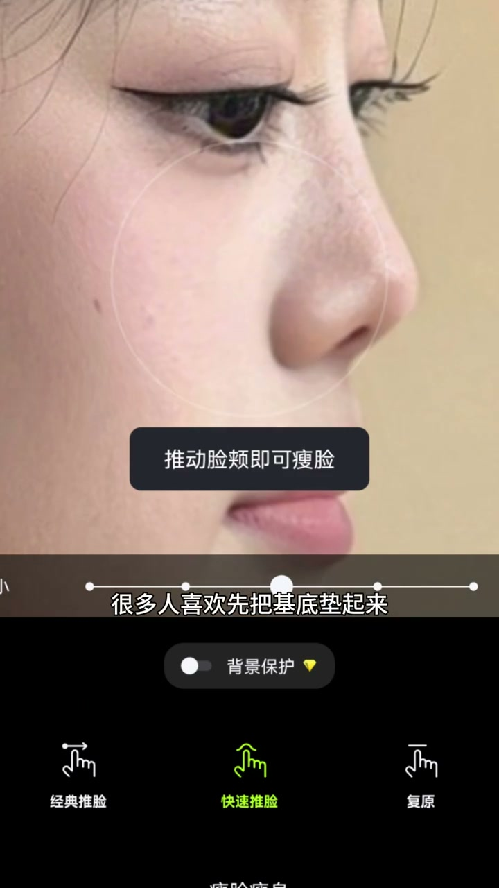
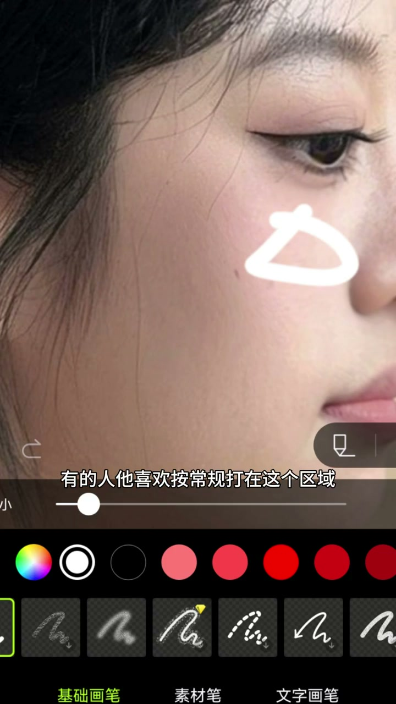
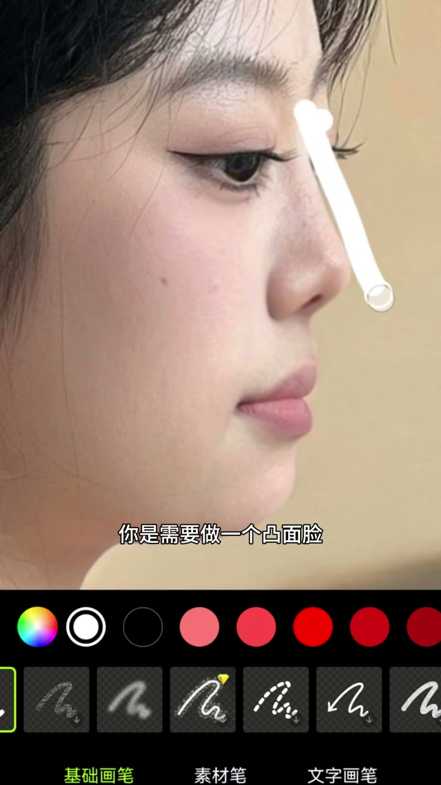
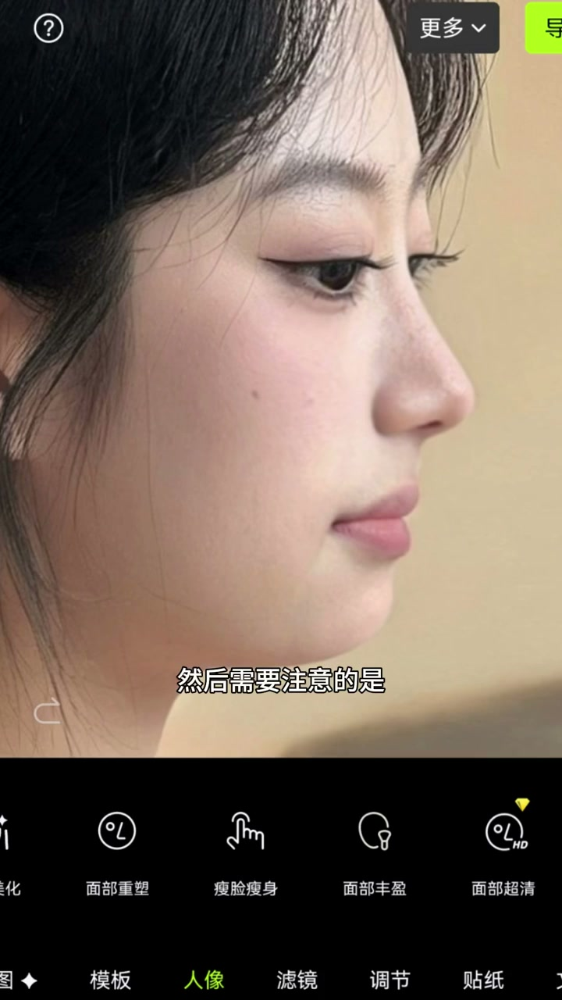

01
中文
想成为顶级美女，面中部必须非常优越。
EN
To be a top-tier beauty, your midface must be outstanding.
表达提示top-tier beauty（顶级美女）；midface（面中部）

Scene English · 面部骨相 · 美学思路
This Approach Will Actually Help You — Come Learn
🎧 语音讲解
Base the Face First, Then the Nose
情境想成为顶级美女，面中部必须非常优越。第一个坑：很多人喜欢先把鼻基底垫起来，但垫完并不好看，因为中轴线这一条线立体了，其他位置跟不上。所以做鼻基底之前，先要把面基底的位置做得很优越。语域：美学分析，专业讲解。
想成为顶级美女，面中部必须非常优越。
To be a top-tier beauty, your midface must be outstanding.
表达提示top-tier beauty（顶级美女）；midface（面中部）
很多人喜欢先把鼻基底垫起来，但垫完并不好看。
Many people pad the nasal base first — but it never looks good.
表达提示pad the nasal base（垫鼻基底）
中轴线立体了，其他位置还跟不上。
The midline becomes 3D while the rest lags behind.
表达提示the midline（中轴线）；lags behind（跟不上）
面中部 → midface / the middle of the face
垫鼻基底 → pad the nasal base / augment the nose base

Where the Face Base Goes: The Baby Fat Spot
情境面基底做在哪里要仔细分析。有人喜欢按常规打在这个区域让脸饱满，但颧骨高的同学会连成一片，面中很长。真正好看的顶级美女，纯天然的婴儿肥大概是在这个位置——既缩短中庭，又让面部有呼吸感，还能弱化颧骨。语域：美学分析，位置讲解。
有人喜欢按常规打在这个区域，让脸比较饱满。
Some fill the usual zone for a fuller face.
表达提示the usual zone（常规区域）
但如果你颧骨高，这里连成一片，面中会很长。
But with high cheekbones it all blends together and the midface grows long.
表达提示high cheekbones（颧骨高）；blends together（连成一片）
纯天然的婴儿肥，大概是在这个位置。
Natural baby fat sits roughly right here.
表达提示baby fat（婴儿肥）
颧骨高 → high cheekbones / prominent cheekbones
婴儿肥 → baby fat / natural fullness

The Nasal Base and the Maxillary Arch
情境做完面基底我们才可以做鼻基底。如果是长中庭，需要做凸面脸，显得立体、中庭短。鼻基底凹陷很严重的，会有上颌发育不足，容易误判成反颌。所以做鼻基底一定要把上颌弓的位置也做起来。语域：美学分析，进阶讲解。
如果你是长中庭，需要做一个凸面脸。
With a long midface, you need a convex face shape.
表达提示a convex face shape（凸面脸）
鼻基底凹陷很严重，应该会有上颌发育不足。
Severe nasal-base indentation usually means a weak upper jaw.
表达提示a weak upper jaw（上颌发育不足）
做鼻基底，一定要把上颌弓的位置也做起来。
When doing the nasal base, you must also build up the maxillary arch.
表达提示the maxillary arch（上颌弓）
凸面脸 → convex face / projected profile
上颌发育不足 → weak upper jaw / underdeveloped maxilla

Additive Thinking for the Skeleton
情境骨相整形要用加法思维：眼眶骨这一圈都要立体，眉骨、双C、山根都很重要。下巴不能往前兜；面中能立体到这个程度，下颌线就不必担心。真正的骨相做加法的思维，是更长久更抗衰的。语域：美学分析，总结升华。
骨相要做加法，眼眶骨这一圈都要立体。
Enhance the skeleton additively — the whole orbital rim should read 3D.
表达提示the orbital rim（眼眶骨）；additively（做加法）
有些时候你很瘦还没有下颌线，就不要死磕这里。
If you're thin but still lack a jawline, stop fixating on it.
表达提示stop fixating on it（不要死磕）
骨相做加法的思维，是更长久更抗衰的。
Additive bone work is more lasting and more anti-aging.
表达提示anti-aging（抗衰）
做加法 → additive work / build up, not remove
抗衰 → anti-aging / aging-resistant
讲顺序原则
讲面基底位置
讲上颌弓
总结骨相思维
「面中部优越」用 midface is outstanding，不用 middle of face is good。
「颧骨高」用 high cheekbones。
「鼻基底凹陷」用 nasal-base indentation。
「做加法」用 additive / build up。